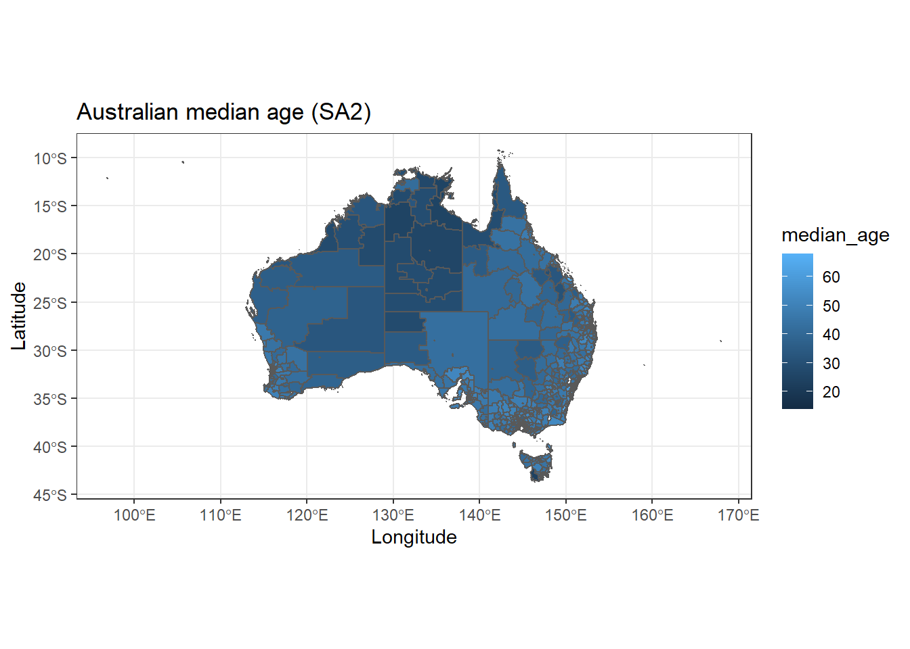

Chapter 2 Making beautiful maps in R
2.1 Why use a map
Maps are a great way to communicate data. They’re easily understandable, flexible, and more intuitive than a chart. There’s been numerous studies showing that the average professional often struggles to interpret the units on a y-axis, let alone understand trends in scatter or line graphs.
Making maps in R takes some initial investment (note: they can be fiddly). However once you have some code you know and understand, spinning up new pieces of analysis can happen in minutes, rather than hours or days.
The aim of this quick-reference guide is to get you from ‘I can produce a map in R’ to something more like ‘I can conduct spatial analysis and produce a visual which is ready to send without any further work.’
2.2 Getting started
First up, we need to load a bunch of packages.
#Loads the required required packages
library(plyr)
library(dplyr)
library(vctrs)
library(tidyr)
library(ggplot2)
library(tmap)
library(ggmap)
library(dplyr)
library(sf)
library(ggspatial)
library(rlang)
library(broom)
library(tidyverse)
library(readxl)
library(purrr)
library(Census2016)
library(absmapsdata)
library(officer)The absmapsdata package is particularly important, as it contains most ASGS shapefiles (the ones found on the ABS website).
The main ASGS structures and their names in this package are:
SA1 2016: sa12016 SA2 2016: sa22016 SA3 2016: sa32016 SA4 2016: sa42016 Greater Capital Cities 2016: gcc2016 Remoteness Areas 2016: ra2016 State 2016: state2016
2.3 Making your first map
To get a basic demographic map up and running, we will splice together the ABS SA2 shapefile and some data from the 2016 Australian Census. There is a fantastic packaged called Census2016 which makes downloading this data in a clean format easy.
#Get the shapefile form the absmapsdata package (predefined in the list above)
#Get the 2016 census dataset
census2016_wide <- Census2016_wide_by_SA2_year
#Select the key demographic columns from the census data (i.e. the first 8 variables)
census_short <- census2016_wide[,1:8]
#Filter for a single year
census_short_2016 <- census_short %>%
filter(year==2016)
#Use the inner_join function to get the shapefile and census wide data into a single df for analysis / visualisation
SA2_shp_census_2016 <- inner_join(sa22016,census_short_2016,
by = c("sa2_name_2016" = "sa2_name"))
#Plot a map that uses census data
map1 <- ggplot() +
geom_sf(data = SA2_shp_census_2016, aes(fill = median_age)) +
ggtitle("Australian median age (SA2)") +
xlab("Longitude") +
ylab("Latitude") +
theme_bw() +
theme(legend.position = "right")
map1There we go! This looks ‘okay’… but it can be much better.
2.4 From okay to good
Heat maps don’t really show too much interesting data on such a large scale, so let’s filter down to Greater Melbourne.
Seeing we have a bunch of census data in our dataframe, we can also do some basic analysis (e.g. population density).
#As a bit of an added extra, we can create a new population density column
SA2_shp_census_2016 <- SA2_shp_census_2016 %>%
mutate(pop_density=persons/areasqkm_2016)
#Filter for Greater Melbourne
MEL_SA2_shp_census_2016 <- SA2_shp_census_2016 %>%
filter(gcc_name_2016=="Greater Melbourne")
#Plot the new map just for Greater Melbourne
map2 <- ggplot() +
geom_sf(data = MEL_SA2_shp_census_2016, aes(fill = median_age, border=NA)) +
ggtitle("Median age in Melbourne (SA2)") +
xlab("Longitude") +
ylab("Latitude") +
theme_bw() +
theme(legend.position = "right")
map2
Much better. We can start to see some trends in this map. It looks like younger people tend to live closer to the city center. This seems logical.
2.5 From good to great
The map above is a good start! However, how do we turn this from something ‘good,’ into something that is 100% ready to share?
We see our ‘ink to chart ratio’ (i.e. the amount of non-data stuff that is on the page) is still pretty high. Is the latitude of Melbourne useful for this analysis…? Not really. Let’s get rid of it and the axis labels. A few lines of code adjusting the axis, titles, and theme of the plot will go a long way. Because my geography Professor drilled it into me, I will also add a low-key scale bar.
map3 <- ggplot() +
geom_sf(data = MEL_SA2_shp_census_2016, aes(fill = median_age)) +
labs(title="Melbourne's youth tend to live closer to the city centre",
subtitle = "Analysis from the 2016 census",
caption = "Data: Australian Bureau of Statistics 2016",
x="",
y="",
fill="Median age") +
ggspatial::annotation_scale(location="br")+
theme_minimal() +
theme(axis.ticks.x = element_blank(),axis.text.x = element_blank())+
theme(axis.ticks.y = element_blank(),axis.text.y = element_blank())+
theme(panel.grid.major = element_blank(), panel.grid.minor = element_blank())+
theme(legend.position = "right")+
theme(plot.title=element_text(face="bold",size=12))+
theme(plot.subtitle=element_text(size=11))+
theme(plot.caption=element_text(size=8))
map32.6 From great to fantastic
The above is perfectly reasonable and looks professionally designed. However, this is where we can get really special.
Let’s add a custom colour scheme, drop the boundary edges for the SA2’s, and add in a dot and label for Melbourne CBD.
#Add in a point for the Melbourne CBD
MEL_location <- data.frame(town_name = c("Melbourne"),
x = c(144.9631),
y = c(-37.8136))
map4 <- ggplot() +
geom_sf(data = MEL_SA2_shp_census_2016, aes(fill = median_age),color=NA) +
geom_point(data=MEL_location,aes(x=x,y=y),size=2,color="black")+
labs(title="Melbourne's youth tend to live closer to the city centre",
subtitle = "Analysis from the 2016 census",
caption = "Data: Australian Bureau of Statistics 2016",
x="",
y="",
fill="Median age") +
scale_fill_steps(low="#E2E0EB", high="#3C33FE")+
annotate(geom='curve',
x=144.9631,
y=-37.8136,
xend=144.9,
yend=-38.05,
curvature=0.5,
arrow=arrow(length=unit(2,"mm")))+
annotate(geom='text',x=144.76,y=-38.1,label="Melbourne CBD")+
ggspatial::annotation_scale(location="br")+
theme_minimal() +
theme(axis.ticks.x = element_blank(),axis.text.x = element_blank())+
theme(axis.ticks.y = element_blank(),axis.text.y = element_blank())+
theme(panel.grid.major = element_blank(), panel.grid.minor = element_blank())+
theme(legend.position = "right")+
theme(plot.title=element_text(face="bold",size=12))+
theme(plot.subtitle=element_text(size=11))+
theme(plot.caption=element_text(size=8))
map4
There we go! A ‘client-ready’ looking map that can be added to a report, presentation, or with a few tweaks a digital dashboard.
Make sure to export the map as a high quality PNG using the ggsave function.